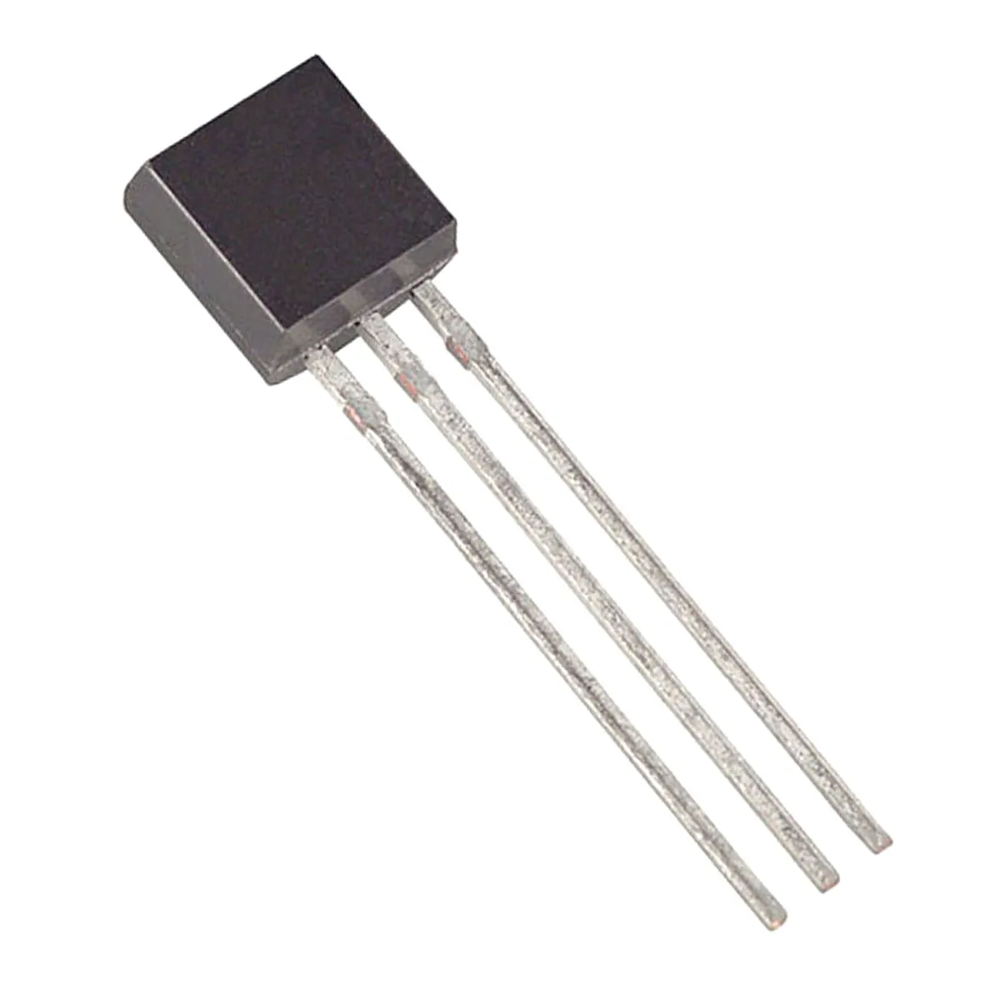
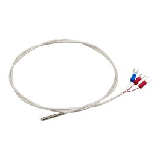
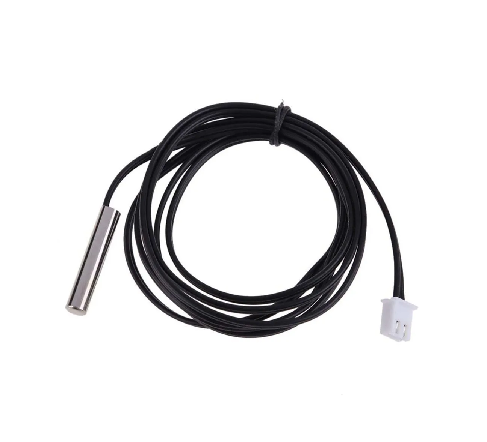

SENSORES DE TEMPERATURA ANALÓGICOS
Sensores de temperatura analógicos fornecem um sinal de saída contínua, como tensão ou resistência proporcional a temperatura permitindo medições intermediárias. Aqui estão alguns exemplos de sensores analógicos:
Termopar
Os termopares são sensores de temperatura muito utilizados, sua simplicidade e confiabilidade são uns dos maiores motivos para o uso. Ele não mede a temperatura diretamente, ele converte energia térmica em energia elétrica. O termopar é formado pela junção de dois metais diferentes, que geram uma voltagem quando há diferença de temperatura. Se fosse o mesmo metal, não haveria diferença elétrica suficiente para a medição.
Produz uma pequena tensão elétrica, proporcional a temperatura, muito usado em indústrias, existem vários tipos como por exemplo tipo J, K e tipo T, funciona sobre o efeito Seebeck.
Sensor LM35
O LM35 é um sensor de temperatura analógico, que gera uma tensão elétrica proporcional à grandeza térmica. Sendo assim, um sensor linear com sensibilidade de 10mV por grau Celsius, ou seja a cada 1 °C, sua saída varia em 10mV. Além disso, sua faixa de saída pode variar aproximadamente de 20 mV até 1,5V. É muito utilizado em pequenos projetos que podem ser facilmente integrados com microcontrolador Arduino.

Sensor RTD
É um sensor de temperatura preciso que mede a temperatura variando sua resistência com calor. Na maioria das aplicações de temperaturas industriais as medidas são de 200 °C a 400 °C, os sensores RTD são mais lineares, em relação a sua temperatura e sua resistência, porém tem sua aplicação limitada a temperaturas abaixo de 1000 °C, o metal mais utilizado nesse tipo de sensor é a platina, devido a sua estabilidade e resistência à oxidação. Para medir a resistência do RTD o circuito precisa passar uma corrente elétrica por ele, essa corrente gera um pequeno calor que ocasiona o efeito joule, que pode enganar o sensor, fazendo-o ler uma temperatura levemente mais alta do que a real.

Sensor NTC
O sensor NTC (Negative Temperature Coefficient) é um tipo de termistor, ou seja, um resistor cuja resistência varia conforme a temperatura. Sua principal característica é apresentar um coeficiente de temperatura negativo, o que significa que, à medida que a temperatura aumenta, sua resistência elétrica diminui. Da mesma forma, quando a temperatura diminui, a resistência do sensor aumenta. Esse comportamento ocorre porque o NTC é fabricado com materiais semicondutores. Com o aumento da temperatura, há maior movimentação de elétrons nesses materiais, facilitando a condução de corrente elétrica e reduzindo a resistência. Por esse motivo, o NTC é bastante sensível a variações térmicas, sendo capaz de detectar pequenas mudanças de temperatura. A relação entre temperatura e resistência no NTC não é linear, ou seja, a variação não ocorre de forma proporcional. Isso faz com que seja necessário o uso de cálculos ou tabelas para converter corretamente os valores de resistência em temperatura. Mesmo assim, seu uso é bastante comum devido ao seu baixo custo e boa sensibilidade. Os sensores NTC são amplamente utilizados em diversas aplicações, como termômetros digitais, sistemas de controle de temperatura em eletrodomésticos (geladeiras e ar-condicionado), monitoramento térmico em baterias, computadores e também em sistemas automotivos. Apesar de suas vantagens, como custo reduzido e tamanho compacto, eles apresentam menor precisão quando comparados a outros sensores mais sofisticados e geralmente precisam de calibração para fornecer medidas mais confiáveis.

Sensores de temperatura
Um sensor de temperatura é um dispositivo utilizado para medir a temperatura de um ambiente, objeto ou sistema, transformando essa informação em um sinal elétrico que pode ser interpretado por equipamentos, como controladores ou microcontroladores. Esses sensores funcionam com base em diferentes princípios físicos, como a variação da resistência elétrica, a geração de tensão ou a emissão de sinais digitais. Eles são amplamente utilizados em diversas áreas, como na indústria, na eletrônica, na medicina e em eletrodomésticos, sendo fundamentais para o controle e a segurança de processos.
A seleção de um sensor de temperatura deve levar em consideração diversos fatores importantes. Um dos principais é a faixa de temperatura que será medida, pois cada tipo de sensor possui limites específicos de operação. Também é necessário avaliar a precisão exigida pela aplicação, já que alguns sensores são mais exatos que outros. Outro ponto relevante é o tempo de resposta, especialmente em situações onde a temperatura varia rapidamente. Além disso, o ambiente de utilização deve ser considerado, pois condições como umidade, vibração ou presença de substâncias corrosivas podem influenciar no desempenho e na durabilidade do sensor. O tipo de saída do sensor, se analógica ou digital, também interfere na escolha, dependendo do sistema em que será utilizado. Por fim, o custo é um fator importante, sendo necessário equilibrar o investimento com o nível de desempenho desejado. Dessa forma, a escolha correta do sensor garante medições mais confiáveis e um melhor funcionamento do sistema.